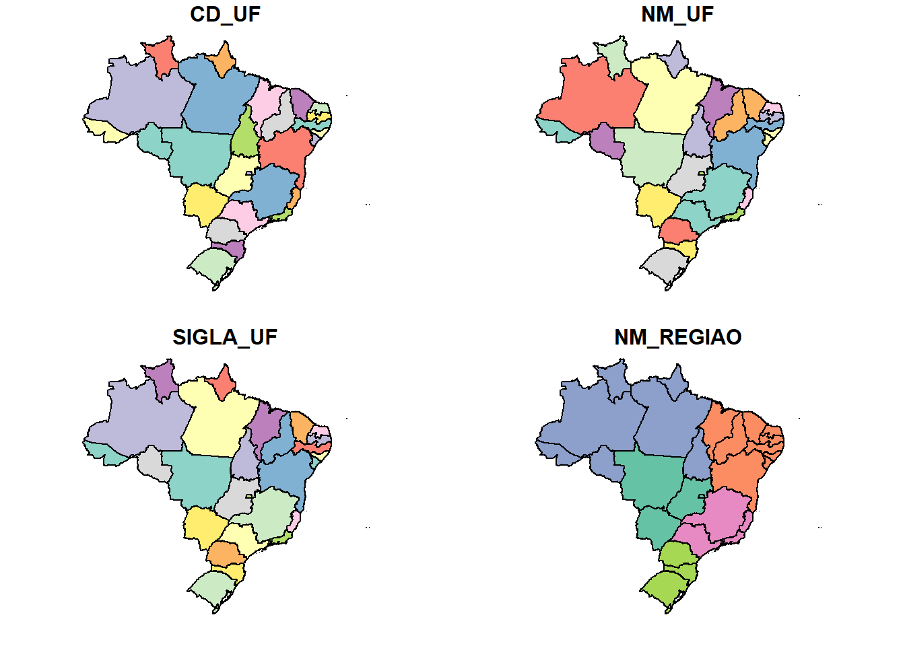

7 Dados qualitativos: mapa corocromático ordinal
Mapas corocromáticos ordinais são usados para representar dados qualitativos que se ordenam. Esses dados podem ser derivados de dados quantitativos para os quais se atribuem classes ordenadas do tipo “baixo-médio-alto”, “ruim-regular-bom” ou outras que sigam esta lógica.
O exemplo usado aqui é o do mapa de potencial de agressividade climática na Amazônia Legal do Brasil, elaborado pela Coordenação de Recursos Naturais e Estudos Ambientais - CREN, da Diretoria de Geociências do IBGE. São três classes: alta (fatores 1 e 2), média (fatores 1, 2 e 3) e baixa (fatores 1, 2 e 3). Aqui, Fator é a causa predominante que explica o potencial de agressividade do clima: os fatores determinantes que explicam cada grau, expressos pelos dígitos 1, 2 e 3, que representam, respectivamente o Excesso de Umidade, a Deficiência de Umidade e a Ocorrência de Ambos Fatores (http://geoftp.ibge.gov.br/cartas_e_mapas/mapas_regionais/sociedade_e_economia/integrado_zee_amazonia_legal/Potencial_de_Agressividade_Climatica.pdf).
A ideia é seguir as cores segundo classe (alta, média e baixa) com variações de tonalidade dentro de cada classe.
7.1 Banco de dados
Iniciamos limpando a memória.
Definimos o diretório de trabalho.
Carregamos os pacotes que serão utilizados.
#para carregar os pacotes que serao usados
library(geobr)
library(sf)
library(rgdal)
library(ggplot2,warn.conflicts=FALSE)
library(dplyr)
library(ggsn)
library(cowplot)
library(ggspatial)
library(broom)
library(rnaturalearth)
library(rnaturalearthdata)Vamos criar o objeto mundo usando a função ne_countries do pacote rnaturalearth.
Vamos examinar o objeto gerado.
## Simple feature collection with 6 features and 63 fields
## Geometry type: MULTIPOLYGON
## Dimension: XY
## Bounding box: xmin: -70.06611 ymin: -18.01973 xmax: 74.89131 ymax: 60.40581
## Geodetic CRS: +proj=longlat +datum=WGS84 +no_defs +ellps=WGS84 +towgs84=0,0,0
## scalerank featurecla labelrank sovereignt sov_a3
## 0 3 Admin-0 country 5 Netherlands NL1
## 1 1 Admin-0 country 3 Afghanistan AFG
## 2 1 Admin-0 country 3 Angola AGO
## 3 1 Admin-0 country 6 United Kingdom GB1
## 4 1 Admin-0 country 6 Albania ALB
## 5 3 Admin-0 country 6 Finland FI1
## adm0_dif level type admin adm0_a3 geou_dif
## 0 1 2 Country Aruba ABW 0
## 1 0 2 Sovereign country Afghanistan AFG 0
## 2 0 2 Sovereign country Angola AGO 0
## 3 1 2 Dependency Anguilla AIA 0
## 4 0 2 Sovereign country Albania ALB 0
## 5 1 2 Country Aland ALD 0
## geounit gu_a3 su_dif subunit su_a3 brk_diff
## 0 Aruba ABW 0 Aruba ABW 0
## 1 Afghanistan AFG 0 Afghanistan AFG 0
## 2 Angola AGO 0 Angola AGO 0
## 3 Anguilla AIA 0 Anguilla AIA 0
## 4 Albania ALB 0 Albania ALB 0
## 5 Aland ALD 0 Aland ALD 0
## name name_long brk_a3 brk_name brk_group abbrev
## 0 Aruba Aruba ABW Aruba <NA> Aruba
## 1 Afghanistan Afghanistan AFG Afghanistan <NA> Afg.
## 2 Angola Angola AGO Angola <NA> Ang.
## 3 Anguilla Anguilla AIA Anguilla <NA> Ang.
## 4 Albania Albania ALB Albania <NA> Alb.
## 5 Aland Aland Islands ALD Aland <NA> Aland
## postal formal_en formal_fr note_adm0
## 0 AW Aruba <NA> Neth.
## 1 AF Islamic State of Afghanistan <NA> <NA>
## 2 AO People's Republic of Angola <NA> <NA>
## 3 AI <NA> <NA> U.K.
## 4 AL Republic of Albania <NA> <NA>
## 5 AI Åland Islands <NA> Fin.
## note_brk name_sort name_alt mapcolor7 mapcolor8 mapcolor9
## 0 <NA> Aruba <NA> 4 2 2
## 1 <NA> Afghanistan <NA> 5 6 8
## 2 <NA> Angola <NA> 3 2 6
## 3 <NA> Anguilla <NA> 6 6 6
## 4 <NA> Albania <NA> 1 4 1
## 5 <NA> Aland <NA> 4 1 4
## mapcolor13 pop_est gdp_md_est pop_year lastcensus gdp_year
## 0 9 103065 2258.0 NA 2010 NA
## 1 7 28400000 22270.0 NA 1979 NA
## 2 1 12799293 110300.0 NA 1970 NA
## 3 3 14436 108.9 NA NA NA
## 4 6 3639453 21810.0 NA 2001 NA
## 5 6 27153 1563.0 NA NA NA
## economy income_grp wikipedia
## 0 6. Developing region 2. High income: nonOECD NA
## 1 7. Least developed region 5. Low income NA
## 2 7. Least developed region 3. Upper middle income NA
## 3 6. Developing region 3. Upper middle income NA
## 4 6. Developing region 4. Lower middle income NA
## 5 2. Developed region: nonG7 1. High income: OECD NA
## fips_10 iso_a2 iso_a3 iso_n3 un_a3 wb_a2 wb_a3 woe_id
## 0 <NA> AW ABW 533 533 AW ABW NA
## 1 <NA> AF AFG 004 004 AF AFG NA
## 2 <NA> AO AGO 024 024 AO AGO NA
## 3 <NA> AI AIA 660 660 <NA> <NA> NA
## 4 <NA> AL ALB 008 008 AL ALB NA
## 5 <NA> AX ALA 248 248 <NA> <NA> NA
## adm0_a3_is adm0_a3_us adm0_a3_un adm0_a3_wb continent
## 0 ABW ABW NA NA North America
## 1 AFG AFG NA NA Asia
## 2 AGO AGO NA NA Africa
## 3 AIA AIA NA NA North America
## 4 ALB ALB NA NA Europe
## 5 ALA ALD NA NA Europe
## region_un subregion region_wb name_len
## 0 Americas Caribbean Latin America & Caribbean 5
## 1 Asia Southern Asia South Asia 11
## 2 Africa Middle Africa Sub-Saharan Africa 6
## 3 Americas Caribbean Latin America & Caribbean 8
## 4 Europe Southern Europe Europe & Central Asia 7
## 5 Europe Northern Europe Europe & Central Asia 5
## long_len abbrev_len tiny homepart
## 0 5 5 4 NA
## 1 11 4 NA 1
## 2 6 4 NA 1
## 3 8 4 NA NA
## 4 7 4 NA 1
## 5 13 5 5 NA
## geometry
## 0 MULTIPOLYGON (((-69.89912 1...
## 1 MULTIPOLYGON (((74.89131 37...
## 2 MULTIPOLYGON (((14.19082 -5...
## 3 MULTIPOLYGON (((-63.00122 1...
## 4 MULTIPOLYGON (((20.06396 42...
## 5 MULTIPOLYGON (((20.61133 60...Observe que o CRS de mundo é WGS84. Na sequência, baixamos o arquivo “BR_UF_2020.zip” que contém o shapefile dos limites estaduais do Brasil, do site do IBGE.
#para identificar o url, faca o download do arquivo shapefile e clique em Ctrl+J
download.file(url = "https://geoftp.ibge.gov.br/organizacao_do_territorio/malhas_territoriais/malhas_municipais/municipio_2020/Brasil/BR/BR_UF_2020.zip", destfile = "BR_UF_2020.zip")Precisamos descompactar o arquivo tipo zip.
Fazemos a leitura do arquivo shapefile no R. O arquivo receberá o nome de UFBR.
## Reading layer `BR_UF_2020' from data source
## `C:\Users\l_viz\Documents\RCartoTematica\BR_UF_2020.shp'
## using driver `ESRI Shapefile'
## Simple feature collection with 27 features and 4 fields
## Geometry type: MULTIPOLYGON
## Dimension: XY
## Bounding box: xmin: -73.99045 ymin: -33.75118 xmax: -28.84764 ymax: 5.271841
## Geodetic CRS: SIRGAS 2000A função head fornece uma série de informações, tais como os limites e o CRS.
## Simple feature collection with 6 features and 4 fields
## Geometry type: MULTIPOLYGON
## Dimension: XY
## Bounding box: xmin: -73.99045 ymin: -13.6937 xmax: -46.06142 ymax: 5.271841
## Geodetic CRS: SIRGAS 2000
## CD_UF NM_UF SIGLA_UF NM_REGIAO
## 1 11 Rondônia RO Norte
## 2 12 Acre AC Norte
## 3 13 Amazonas AM Norte
## 4 14 Roraima RR Norte
## 5 15 Pará PA Norte
## 6 16 Amapá AP Norte
## geometry
## 1 MULTIPOLYGON (((-65.3815 -1...
## 2 MULTIPOLYGON (((-71.07772 -...
## 3 MULTIPOLYGON (((-69.83766 -...
## 4 MULTIPOLYGON (((-63.96008 2...
## 5 MULTIPOLYGON (((-51.43248 -...
## 6 MULTIPOLYGON (((-50.45011 2...Observe que o CRS é SIRGAS 2000. Para ver a unidade de medida do arquivo UFBR.
## [1] "degree"Vamos solicitar a visualização das colunas de UFBR.

Para saber o tipo de dados de UFBR, usamos a função class.
## [1] "sf" "data.frame"A segunda camada shapefile que precisamos é a de potencial de agressividade climática na Amazônia, que se encontra no site do IBGE.
#para fazer o download do arquivo da Amazônia
download.file(url = "https://geoftp.ibge.gov.br/informacoes_ambientais/climatologia/vetores/regionais/shapes_potencial_agressividade_climatica.zip",
destfile = "shapes_potencial_agressividade_climatica.zip")Usamos a função já conhecida para descompactar o arquivo.
E fazemos a leitura do shapefile no R, já atribuindo a projeção SIRGAS 2000 (CRS = 4674).
#para abrir o arquivo shapefile da Amazonia
amazonia <- st_read("./VetoresIntegrados.shp", crs = 4674)## Reading layer `VetoresIntegrados' from data source
## `C:\Users\l_viz\Documents\RCartoTematica\VetoresIntegrados.shp'
## using driver `ESRI Shapefile'## Warning: st_crs<- : replacing crs does not reproject data; use
## st_transform for that## Simple feature collection with 454 features and 2 fields
## Geometry type: POLYGON
## Dimension: XY
## Bounding box: xmin: -73.99853 ymin: -18.04267 xmax: -43.98264 ymax: 5.277829
## Geodetic CRS: SIRGAS 2000Damos uma olhada nos limites, colunas e projeção do arquivo.
## Simple feature collection with 6 features and 2 fields
## Geometry type: POLYGON
## Dimension: XY
## Bounding box: xmin: -65.35683 ymin: -18.04267 xmax: -50.22443 ymax: -9.736471
## Geodetic CRS: SIRGAS 2000
## Id Classe geometry
## 1 0 A2 POLYGON ((-51.72783 -15.548...
## 2 0 A2 POLYGON ((-58.00463 -15.393...
## 3 0 M2 POLYGON ((-59.98223 -11.944...
## 4 0 B2 POLYGON ((-61.47633 -10.528...
## 5 0 M2 POLYGON ((-50.22443 -9.8380...
## 6 0 B2 POLYGON ((-50.37933 -9.8277...Podemos visualizar o shapefile “amazonia” (Figura 7.1).
Figure 7.1: Mapa para cada coluna da tabela de dados
Os objetos que iremos utilizar estão em projeções diferentes: mundo (CRS = WGS84), amazonia e UFBR (CRS = SIRGAS 2000). Como estas projeções são compatíveis, vamos mantê-las como estão.
7.2 Potencial de agressividade climática na Amazônia Legal do Brasil
Vamos iniciar a elaboração do mapa usando o ggplot2. A primeira camada a ser mapeada será mundo. Como um objeto de classe sf, usaremos a função geom_sf, indicando a cor do contorno (“white”, branco) e do preenchimento (“grey90”, cinza claro) (Figura 7.2).
Figure 7.2: Mapa-mundi
A segunda camada será a dos limites dos estados brasileiros (UFBR), com contorno em cinza médio (grey50) e preenchimento em cinza mais claro do que o contorno (grey85) e leve transparência (alpha = 0.2) (Figura 7.3).
ggplot() +
geom_sf(data = mundo, colour = "white", fill = "grey90")+
geom_sf(data = UFBR, colour = "grey50", fill = "grey85", alpha = 0.2)Figure 7.3: Mapa-mundi com UFs do Brasil
A terceira camada corresponde à “amazonia”, com o preenchimento da coluna “Classe”, sem contorno dos polígonos (colour = NA). As cores do potencial de agressividade (“Classe”) são preenchidas manualmente com o comando scale_fill_manual (Figura 7.4). Vamos seguir a ordem das cores como em http://geoftp.ibge.gov.br/cartas_e_mapas/mapas_regionais/sociedade_e_economia/integrado_zee_amazonia_legal/Potencial_de_Agressividade_Climatica.pdf.
ggplot() +
geom_sf(data = mundo, colour = "white", fill = "grey90")+
geom_sf(data = UFBR, colour = "grey50", fill = "grey85", alpha = 0.2)+
geom_sf(data = amazonia, aes(fill = Classe), colour = NA)+
scale_fill_manual(values= c("A1" = "red3",
"A2" = "red1",
"M1" = "darkorange3",
"M2" = "darkorange",
"M3" = "goldenrod1",
"B1" = "chartreuse4",
"B2" = "chartreuse3",
"B3" = "chartreuse1"))Figure 7.4: Mapa-mundi com UFs do Brasil e classes de agressividade climática da Amazônia
Observamos que o mapa resultante apresenta ordem alfabética das categorias na legenda, apesar de ter sido indicada outra ordem no código. Isso acontece porque para entender que as categorias são ordenadas, o tipo de dado deve ser factor e deve ser ordenado. Vamos verificar a classe atual da coluna ‘Classe’.
## [1] "character"A classe ‘character’ precisa ser convertida para ‘ordened factor’. Vamos convertê-la.
#para converter em 'factor' ordenado
amazonia$Classe <- as.ordered(amazonia$Classe)
#para estabelecer a ordem entre os níveis
amazonia$Classe <- ordered(amazonia$Classe, levels = c("B3", "B2", "B1", "M3", "M2", "M1", "A2", "A1"))Podemos adicionar o título do mapa, ajustar o tamanho da fonte do título, a cor do fundo, borda do mapa, título da legenda e informações adicionais como a fonte dos dados e os créditos da elaboração do mapa (Figura 7.5).
ggplot() +
geom_sf(data = mundo, colour = "white", fill = "grey90")+
geom_sf(data = UFBR, colour = "grey50", fill = "grey85", alpha = 0.2)+
geom_sf(data = amazonia, aes(fill = Classe), colour = NA)+
scale_fill_manual(values= c("A1" = "red3",
"A2" = "red1",
"M1" = "darkorange3",
"M2" = "darkorange",
"M3" = "goldenrod1",
"B1" = "chartreuse4",
"B2" = "chartreuse3",
"B3" = "chartreuse1"))+
ggtitle("Potencial de agressividade climática na Amazônia Legal")+
theme(panel.background = element_rect(fill = "aliceblue"),
plot.title = element_text(size = 11, hjust = 1, vjust = -10),
panel.border = element_rect(color = "black",linewidth = .1,fill = NA))+
labs(fill = "Potencial", caption = "Fonte: IBGE (2019) \n
Elaborado por: @Ligiaviz")Figure 7.5: Adicionando fonte dos dados e créditos
Observe que agora a legenda segue a ordem estabelecida e não mais a ordem alfabética. Podemos também, alterar a forma como o nome da categoria aparece na legenda. No lugar de “B3” podemos nomeá-la “Baixa 3”.
#para recodificar as categorias
amazonia <- amazonia %>%
mutate(Classe = recode(Classe,
# como referência: categoria antiga = categoria nova
"B3" = "Baixa 3",
"B2" = "Baixa 2",
"B1" = "Baixa 1",
"M3" = "Média 3",
"M2" = "Média 2",
"M1" = "Média 1",
"A2" = "Alta 2",
"A1" = "Alta 1"
))
unique(amazonia$Classe)## [1] Alta 2 Média 2 Baixa 2 Baixa 3 Média 1 Baixa 1 <NA>
## [8] Média 3 Alta 1
## 8 Levels: Baixa 3 < Baixa 2 < Baixa 1 < ... < Alta 1Ainda precisamos de outra camada dos limites das Unidades da Federação para termos ideia da distribuição do potencial de agressividade climática na Amazônia. Aproveitamos também para configurar a legenda, acertando a posição dela no mapa e a cor do fundo, assim como já deixar sem o título do eixo y.
ggplot() +
geom_sf(data = mundo, colour = "white", fill = "grey90")+
geom_sf(data = UFBR, colour = "grey50", fill = "grey85", alpha = 0.2)+
geom_sf(data = amazonia, aes(fill = Classe), colour = NA)+
scale_fill_manual(values= c("Alta 1" = "red3",
"Alta 2" = "red1",
"Média 1" = "darkorange3",
"Média 2" = "darkorange",
"Média 3" = "goldenrod1",
"Baixa 1" = "chartreuse4",
"Baixa 2" = "chartreuse3",
"Baixa 3" = "chartreuse1"))+
ggtitle("Potencial de agressividade climática na Amazônia Legal")+
theme(panel.background = element_rect(fill = "aliceblue"),
plot.title = element_text(size = 11, hjust = 1, vjust = -10),
panel.border = element_rect(color = "black",size = .1,fill = NA))+
labs(fill = "Potencial", caption = "Fonte: IBGE (2019) \n
Elaborado por: @Ligiaviz")+
geom_sf(data = UFBR, colour = "grey50", fill = NA, alpha = 0)+
theme(legend.position = c(0.9, 0.2),
legend.justification = c(0.9, 0.2),
legend.background = element_rect(colour = NA, fill = "aliceblue"),
axis.title.y = element_blank())Figure 7.6: Mapa com correção da legenda e limites das UFs
A delimitação da área do mapa e outros elementos como a linha do Equador também podem ser definidos agora. A última linha do código define a escala gráfica (Figura 7.7).
ggplot() +
geom_sf(data = mundo, colour = "white", fill = "grey90")+
geom_sf(data = UFBR, colour = "grey50", fill = "grey85", alpha = 0.2)+
geom_sf(data = amazonia, aes(fill = Classe), colour = NA)+
scale_fill_manual(values= c("Alta 1" = "red3",
"Alta 2" = "red1",
"Média 1" = "darkorange3",
"Média 2" = "darkorange",
"Média 3" = "goldenrod1",
"Baixa 1" = "chartreuse4",
"Baixa 2" = "chartreuse3",
"Baixa 3" = "chartreuse1"))+
ggtitle("Potencial de agressividade climática na Amazônia Legal")+
theme(panel.background = element_rect(fill = "aliceblue"),
plot.title = element_text(size = 11, hjust = 1, vjust = -10),
panel.border = element_rect(color = "black",size = .1,fill = NA))+
labs(fill = "Potencial", caption = "Fonte: IBGE (2019) \n
Elaborado por: @Ligiaviz")+
geom_sf(data = UFBR, colour = "grey50", fill = NA, alpha = 0)+
theme(legend.position = c(0.9, 0.2),
legend.justification = c(0.9, 0.2),
legend.background = element_rect(colour = NA, fill = "aliceblue"),
axis.title.y = element_blank())+
coord_sf(xlim = c(-77, -24), ylim = c(-20, 7), expand = FALSE)+
geom_hline(yintercept = 0, linetype = "dashed")+
ggspatial::annotation_scale(location = "bl", width_hint = 0.3, line_width = 0.5, height = unit(0.1,"cm"))Figure 7.7: Mapa completo: recorte da área de interesse, escala gráfica e linha do Equador
Para exportar como arquivo de extensão png, usa-se o comando a seguir.